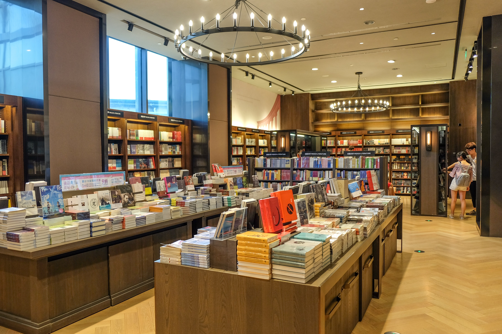
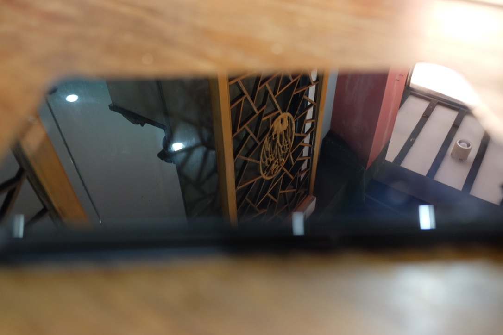
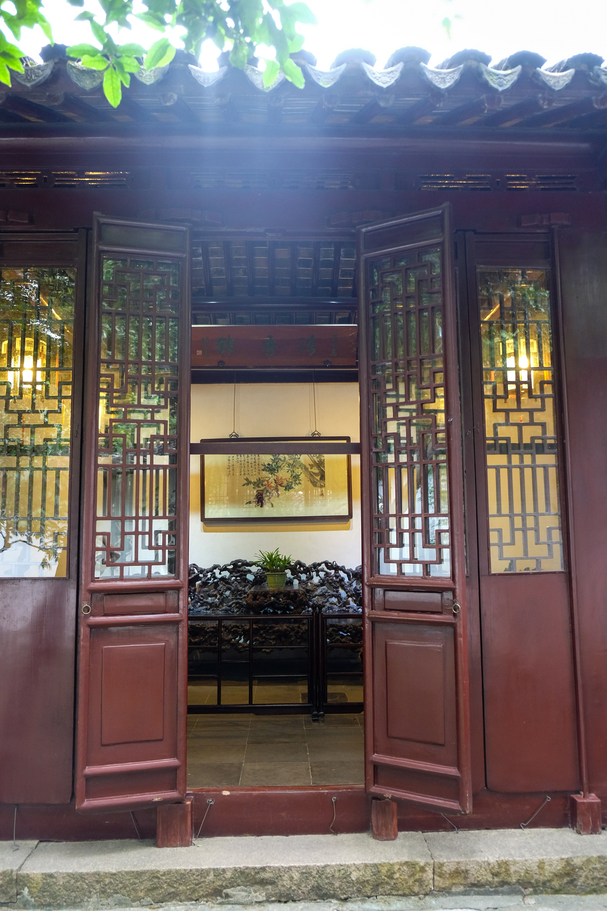

2017.9.26
小青莲和小红花的苏州之行
“小青莲~，我想出去玩。”小红花甩着小青莲的手臂抬着头，两个眼睛扑棱扑棱地眨着。
“去哪玩？”
“去一个有意思的地方吧。”
“好～～那我们去苏州吧。”
小青莲和小红花都不是第一次来苏州了，只不过之前不是因为岁数太小，就是因为各种各样的原因不能按照自己的想法自由地去品味这一座城。
小青莲总是不喜欢青旅、民宿、不喜欢偏远的宾馆，喜欢住在闹市区，因为去哪都方便。到了观前街已经是中午了，小青莲带着小红花到朋友推荐的鱼味亭吃饭，朋友说在这家店他打了好几年的牙祭。出人意料的分量特别大，配的裙带菜非常爽口，小红花说他家的味增汤做的美味又传统。
在搞定住宿以后，慢悠悠地赶去了诚品大厦。从地铁站走到诚品大厦的时候一路向西，七月流火，晃得小青莲睁不开眼睛。小红花拉着一个“瞎子”走进了诚品大厦。楼里面黑白的装修风格，让整个楼都性冷淡了起来，里面各式各样的小玩意可以说是十分可爱了。二楼的诚品文具店，让人足以生出把所有的柜台都搬空的念头。
三楼的诚品书店那是一个不得不逛的地方，小红花和小青莲只能互相扶着对方的下巴，尽量的兜住口水。小青莲总是很喜欢拖着小红花逛书店，也会每次抱回一大堆书回去，放起来供着。

从诚品出去的时候天已经灰了，当时着急去觅食却错过了边上摩天轮亮起来的时候，到离开的时候两人都没有再记起来拍下一张摩天轮的照片，小红花在错过了The London Eye之后，又错过了一个摩天轮。两人来到了新光天地的桃花源记觅食（不得不说只要有钱，新光天地真是一个消费的好地方，可惜小青莲和小红花只能看）。桃花源记的赤豆小圆子，鸡爪，大排骨真的是炒鸡无敌好吃，特别是鸡爪。苏州饭菜的量总是感觉满满当当的，吃完揉揉圆圆的肚子总是有一种很幸福的感觉。
在休整了一晚之后，小青莲和小红花又因为贪睡从原定的七点起床变成了八点半。在木幽木幽地吃完早饭，就乘公交来到了留园。留园的园门是一座丝毫不起眼的石库门，
（小红花：这不是你走错去停车场的理由！），进门是一方小天井，主要是咨询和等导游讲解的地方。不过讲解员姐姐都会说扫一下二维码吧，里面都有讲解的。往里走过一个长长的轿厅就到了里面的景区，一路上可以从墙上的漏窗看到外面的景色。
出了留园往西走一段路就到了西园寺。西园寺前有两座桥架在河上，分别叫做福德和智慧。进了西园寺，寺庙的格局非常宽大。如果信佛，就可以在进庙门的时候拿三炷香去祭拜。小青莲是一个无神论者，小红花因为不敢乱拜因此作罢，只是在各个宝殿外面观望了一下。西园寺是一个与园林结合的寺庙，在这里小青莲第一次看到了宝相庄严的和尚，看着他们抓着一把食料喂鱼，喂鸽子。坐在放生池边晒着太阳，看着探头探脑的乌龟们，小臂粗细的鲶鱼，圆滚滚的锦鲤，微风拂面打落…几截树枝下来（好吧，风还是蛮大的因为台风快来了）。
中饭在西园寺吃了素面，味道还不错，只是记得吃完自己把碗筷放在收纳的地方。
下午，傍晚时分，晃悠悠的走到了平江路附近，小青莲带着小红发直奔随柳居吃完饭，店主是一对老夫妻。做的也都是一些家常菜，电视里放在新闻，头顶上的风扇吱呀吱呀的转着，听着周围人扯点家常，十分的惬意。

随柳居内
平江路从太阳开始落山兜兜转转到了深夜，一路上边吃边转，看看夜景兜兜小店，小青莲手里抓着小笼包、豆干、鸡爪，坐在河边的长凳上，听着吴侬细语，看着游人如织。路上遇到一条可爱的狗狗（小青莲错过了一条马尔济斯，事后绝望后悔上天台），蹲坐在路中间。小青莲兴奋的陪他好久，看着他闪亮的大眼睛，柔顺的被毛。忽然路边一个阿姨牵着两条泰迪走了过去，这只见色忘义的狗唰一下就追出去闻人家屁股了。
按照惯例，贪睡的小青莲和小红花一觉睡到了九点才起床。从观前后街走到了哑巴生煎，吃了早饭（不得不说小青莲和小红发对于生煎小笼都是无比的热爱）。
走出哑巴生煎，再走一点就是狮子林了。狮子林是从一个小巷子里穿过去就到了。里面的太湖石的狮子雕刻群。狮子林是一个很有禅意的地方，从字画到建筑到装饰，虽然如今很多桌椅上都放上了太湖石雕展示==！狮子林里面的匾额，石碑，亭额都非常有意思都有各自的典故，狮子林假山虽然占地不大但是却可以说是非常庞大非常复杂了，就是有些地方非常矮要注意碰头哦~去的时间不对了，池子里的荷花已经没剩几朵了，但是可以想象盛夏时节满池子的荷花有多么的漂亮。
狮子林其实就在平江路附近，临时起意就去了耦园。白天的平江路显得有几分冷清，远远比不上夜晚的繁华。
在平江路拐进一条小巷，边上是小河，岸上杨柳依依，对岸墙上爬满了绿腾（图）。小巷的深处便是耦园。耦园三面环河，小巧精致。耦园里有一个姑娘正在拍古装照，正巧阳光洒下，神采夺目。耦园不大亦是不俗，园中的池中央有假山。假山上有红红的花。“小青莲，看彼岸花，曼珠沙华。”接着小红花便说道什么石蒜科什么属。小青莲这种桃花都认不出的早就云里雾里了。小青莲只知道“彼岸花开开彼岸….”这种酸不拉几的东西。
辗转来到了沧浪亭。沧浪亭嚯，小红发在边上念叨沧浪之水可以濯吾足。恶魔麻麻买面膜。
小青莲带着小红发不知道绕到了那里去，是从一条河边摸索到了沧浪亭，顿时就有一种“东顾草树郁然，崇阜广水，不类乎城中。水得微径于杂花修竹之间。东趋数百步，有弃地，纵广合五六十寻，三向皆水也。”的感觉，尽管周围环境变了，但是从河对岸一眼望过去就知道，肯定是那。沧浪亭里不似其他园林，朴实，大巧不工。五百贤祠门口是一片竹海，风过，竹响，好一个“翠玲珑”。沧浪亭有各式各样的竹子，整个人置身于一片竹海，在那里面特别的安静，仿佛与世隔绝。宁可食无肉,不可居无竹。怪不得君子如此爱竹。沧浪亭还有很多株芭蕉，特别高特别大。后来不经意间想到，屋外翠竹，院内芭蕉，这不是潇湘馆吗？！当时是有台风，所以天气阴沉，下午三四点便有暮色降临之感，复廊东北角出门有一方亭，小青莲和小红花就坐在亭中，静静地看着水中的游鱼嬉戏，听老爷爷老奶奶讲过去的故事……..

出了沧浪亭对面就是可园，时间的关系没有进去，只是瞥了一眼，便觉得风情万种……


 2017.9.26
2017.9.26